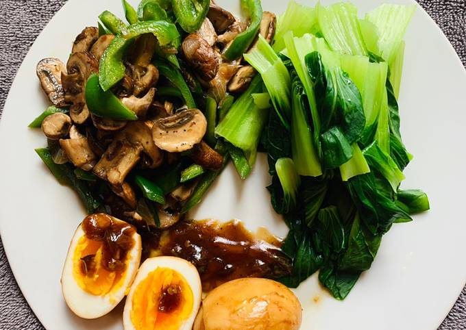

Bok Choi
Japanese Vegetarian
Five week course in London
A five week introduction to traditional
Japanese vegetarian meals, teaching you a
selection of rice and noodle dishes.

Sauces Masterclass
One day workshop
An intensive one-day course looking at how
to create the most delicious sauces for use in
a range of Japanese cookery.
Popular Recipies
- Yakitori (grilled chicken)
- Tsukune (minced chicken patties)
- Okonomiyaki (savory pancakes)
- Mizutaki (chicken stew)
Contact
- Yoko's Kitchen
- 27 Redchurch Street
- Shoreditch
- London E2 7DP